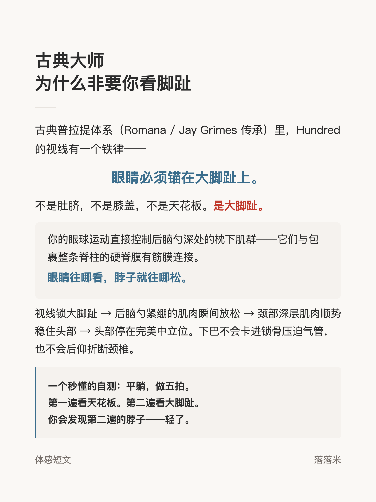
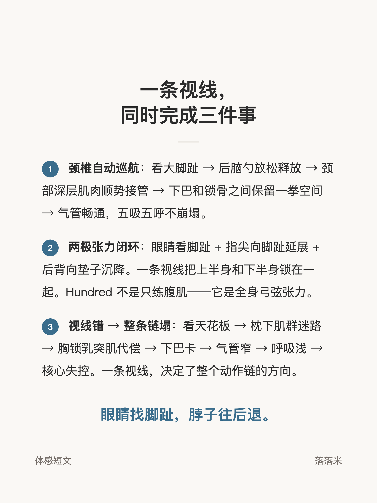

体感短文 · Hundred
Hundred 视线锚点

1 / 3

2 / 3

3 / 3
← 左右滑动浏览全部卡片 →
古典普拉提体系里，Hundred 的视线有一个铁律：眼睛锚在大脚趾上。不是肚脐，不是膝盖，不是天花板。
眼球运动直接影响后脑勺深处的枕下肌群——眼睛往哪看，脖子就往哪松。这组卡片拆解了视线与颈部张力的连接，并给出一个平躺五拍就能验证的自测。
1 / 3

2 / 3

3 / 3
← 左右滑动浏览全部卡片 →
古典普拉提体系里，Hundred 的视线有一个铁律：眼睛锚在大脚趾上。不是肚脐，不是膝盖，不是天花板。
眼球运动直接影响后脑勺深处的枕下肌群——眼睛往哪看，脖子就往哪松。这组卡片拆解了视线与颈部张力的连接，并给出一个平躺五拍就能验证的自测。